Where They Hang Now
540 works in 135 cities.
Paris France · 53
Musée du Louvre 33

Madonna of Chancellor Rolin
Jan van Eyck · c. 1435
Renaissance

Virgin of the Rocks
Leonardo da Vinci · c. 1483–94
Renaissance

An Old Man and His Grandson
Domenico Ghirlandaio · c. 1490
Renaissance

Mona Lisa
Leonardo da Vinci · c. 1503–19
Renaissance

Portrait of Baldassare Castiglione
Raphael · c. 1514–15
Renaissance

The Moneylender and His Wife
Quentin Matsys · 1514
Renaissance

The Wedding at Cana
Paolo Veronese · 1562–63
Renaissance

Charles I at the Hunt
Anthony van Dyck · c. 1636
Baroque & Rococo

The Cheat with the Ace of Diamonds
Georges de La Tour · c. 1636–40
Baroque & Rococo

Et in Arcadia Ego
Nicolas Poussin · c. 1638
Baroque & Rococo

Peasant Family in an Interior
Louis Le Nain · c. 1642
Baroque & Rococo

The Clubfoot
Jusepe de Ribera · 1642
Baroque & Rococo

The Young Beggar
Bartolomé Esteban Murillo · c. 1647–48
Baroque & Rococo

Louis XIV
Hyacinthe Rigaud · 1701
Baroque & Rococo

Pilgrimage to Cythera
Antoine Watteau · 1717
Baroque & Rococo

The Ray
Jean-Siméon Chardin · 1728
Baroque & Rococo

Diana Leaving Her Bath
François Boucher · 1742
Baroque & Rococo

Oath of the Horatii
Jacques-Louis David · 1784
Neoclassical & Romantic

The Sleep of Endymion
Anne-Louis Girodet · 1791
Neoclassical & Romantic

Imaginary View of the Grande Galerie of the Louvre in Ruins
Hubert Robert · 1796
Neoclassical & Romantic

Portrait of a Black Woman (Portrait of Madeleine)
Marie-Guillemine Benoist · 1800
Neoclassical & Romantic

Bonaparte Visiting the Plague Victims of Jaffa
Antoine-Jean Gros · 1804
Neoclassical & Romantic

The Charging Chasseur
Théodore Géricault · 1812
Neoclassical & Romantic

La Grande Odalisque
Jean-Auguste-Dominique Ingres · 1814
Neoclassical & Romantic

The Raft of the Medusa
Théodore Géricault · 1818–19
Neoclassical & Romantic

The Colosseum Seen from the Farnese Gardens
Jean-Baptiste-Camille Corot · 1826
Neoclassical & Romantic

The Death of Sardanapalus
Eugène Delacroix · 1827
Neoclassical & Romantic

Liberty Leading the People
Eugène Delacroix · 1830
Neoclassical & Romantic

Louis-François Bertin
Jean-Auguste-Dominique Ingres · 1832
Neoclassical & Romantic

Women of Algiers in Their Apartment
Eugène Delacroix · 1834
Neoclassical & Romantic
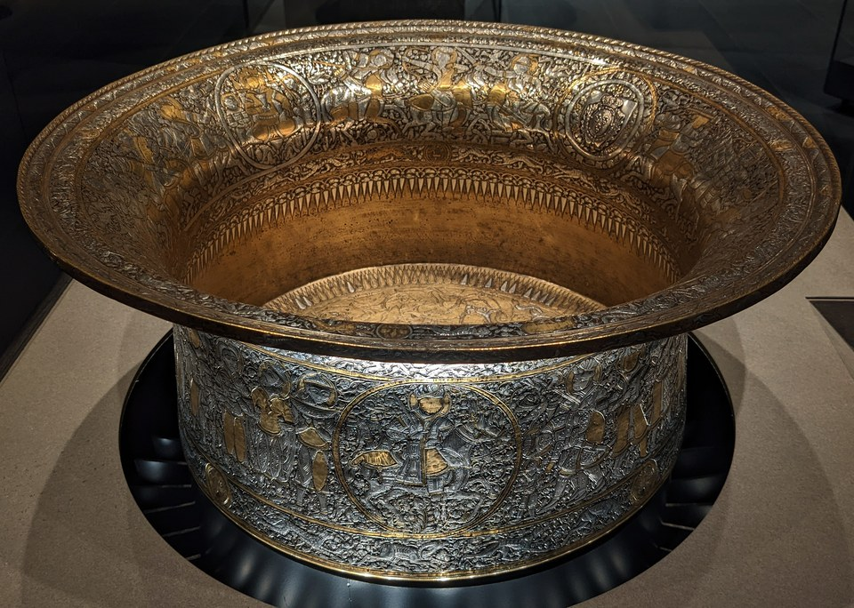
Basin known as the "Baptistère de Saint Louis"
Muhammad ibn al-Zayn · About 1325–40
Islamic World
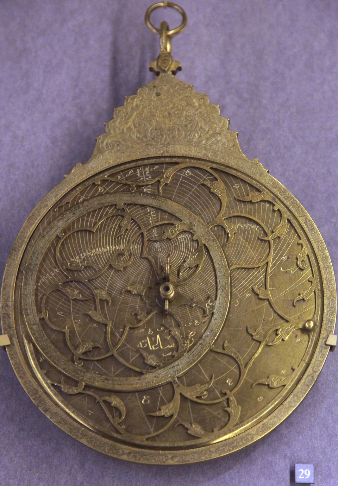
Planispheric astrolabe
'Abd al-A'imma · 1700–1715
Islamic World

Jahangir Visiting the Ascetic Jadrup, from the St. Petersburg Album
Attributed to Govardhan · About 1616–20
India & South Asia
Musée d'Orsay 17

The Desperate Man
Gustave Courbet · c. 1844–45
Neoclassical & Romantic · on loan from Qatar Museums

A Burial at Ornans
Gustave Courbet · 1849–50
Realism & Impressionism

The Gleaners
Jean-François Millet · 1857
Realism & Impressionism

Le Déjeuner sur l'herbe
Édouard Manet · 1863
Realism & Impressionism

Olympia
Édouard Manet · 1863
Realism & Impressionism

The Birth of Venus
Alexandre Cabanel · 1863
Realism & Impressionism

Family Reunion
Frédéric Bazille · 1867–68
Realism & Impressionism

Arrangement in Grey and Black No. 1 (Whistler's Mother)
James McNeill Whistler · 1871
Realism & Impressionism

The Cradle
Berthe Morisot · 1872
Realism & Impressionism

The Dance Class
Edgar Degas · 1873–76
Realism & Impressionism

The Floor Scrapers
Gustave Caillebotte · 1875
Realism & Impressionism

In a Café (L'Absinthe)
Edgar Degas · 1875–76
Realism & Impressionism

Bal du moulin de la Galette
Pierre-Auguste Renoir · 1876
Realism & Impressionism

Boat in the Flood at Port-Marly
Alfred Sisley · 1876
Realism & Impressionism

The Apparition
Gustave Moreau · 1876
Realism & Impressionism

The Poor Fisherman
Pierre Puvis de Chavannes · 1881
Realism & Impressionism

The Card Players
Paul Cézanne · 1893–96
Realism & Impressionism
Bibliothèque nationale de France 2
Musée Marmottan Monet 1

London United Kingdom · 47
National Gallery 23

Arnolfini Portrait
Jan van Eyck · 1434
Renaissance

The Battle of San Romano
Paolo Uccello · c. 1438–40
Renaissance

The Baptism of Christ
Piero della Francesca · c. 1437–45
Renaissance

Bacchus and Ariadne
Titian · 1520–23
Renaissance

The Ambassadors
Hans Holbein the Younger · 1533
Renaissance

An Allegory with Venus and Cupid
Agnolo Bronzino · c. 1545
Renaissance

Supper at Emmaus
Caravaggio · 1601
Baroque & Rococo

Triple Portrait of Cardinal de Richelieu
Philippe de Champaigne and studio · c. 1642
Baroque & Rococo

Philosophy
Salvator Rosa · c. 1645
Baroque & Rococo

Rokeby Venus
Diego Velázquez · c. 1647–51
Baroque & Rococo

Seaport with the Embarkation of the Queen of Sheba
Claude Lorrain · 1648
Baroque & Rococo

The Courtyard of a House in Delft
Pieter de Hooch · 1658
Baroque & Rococo

The Stonemason's Yard
Canaletto · c. 1725
Baroque & Rococo

Marriage A-la-Mode: The Tête à Tête
William Hogarth · c. 1743
Baroque & Rococo

Whistlejacket
George Stubbs · c. 1762
Neoclassical & Romantic

An Experiment on a Bird in the Air Pump
Joseph Wright of Derby · 1768
Neoclassical & Romantic

Self-Portrait in a Straw Hat
Élisabeth Vigée Le Brun · 1782
Neoclassical & Romantic

The Hay Wain
John Constable · 1821
Neoclassical & Romantic

The Execution of Lady Jane Grey
Paul Delaroche · 1833
Neoclassical & Romantic

The Fighting Temeraire
J. M. W. Turner · 1839
Neoclassical & Romantic

Rain, Steam and Speed
J. M. W. Turner · 1844
Neoclassical & Romantic

Sunflowers
Vincent van Gogh · 1888
Realism & Impressionism

The Boulevard Montmartre at Night
Camille Pissarro · 1897
Realism & Impressionism
British Library 5
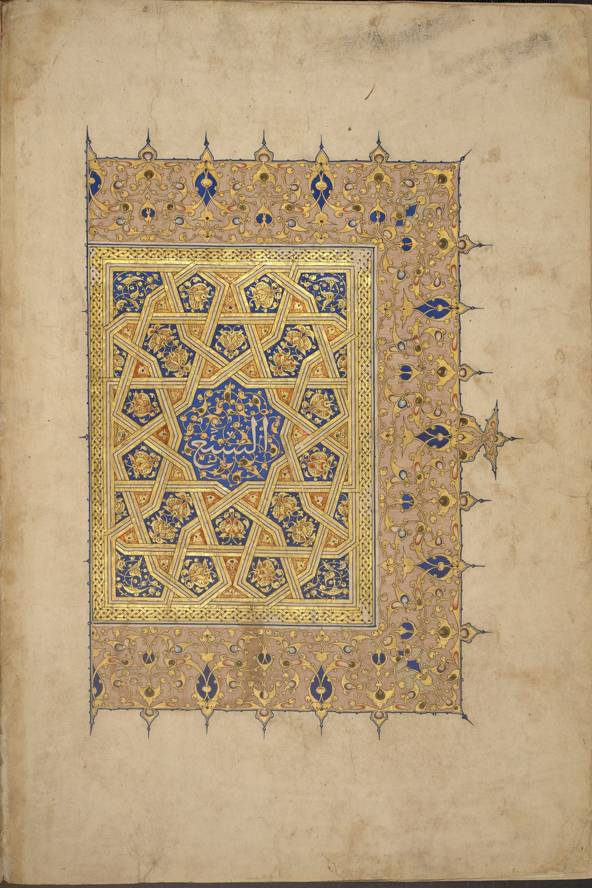
Right side of a double-page frontispiece to the seventh volume of Sultan Baybars' Qur'an
Attributed to Abu Bakr Sandal, with Aydughdi ibn Abdallah (illumination); Muhammad ibn al-Wahid (calligraphy) · 1304–1306
Islamic World
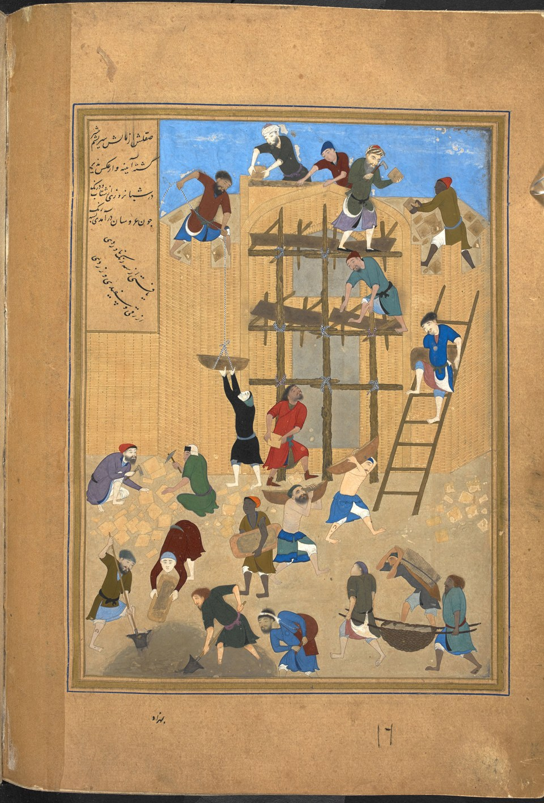
The Building of the Palace of Khawarnaq
Ascribed to Bihzad · 1494–95
Islamic World

Ghiyath al-Din enthroned with attendants, from the Ni'matnama
Unknown painter of the Malwa Sultanate court at Mandu · About 1495–1505
India & South Asia

Hanuman flies to the Himalayas in search of sacred herbs, from the Mewar Ramayana
Sahibdin · 1652
India & South Asia

General Claude Martin's house Constantia set in its park at Lucknow
Sita Ram · 1814–15
India & South Asia
Victoria and Albert Museum 5

Salisbury Cathedral from the Bishop's Ground
John Constable · 1823
Neoclassical & Romantic

The Ardabil Carpet
Maqsud Kashani and unknown Safavid weavers · AH 946 / 1539–40
Islamic World

Akbar's adventures with the elephant Hawa'i, from the Akbarnama
Basawan (design) and Chetar (painting) · About 1590–95
India & South Asia
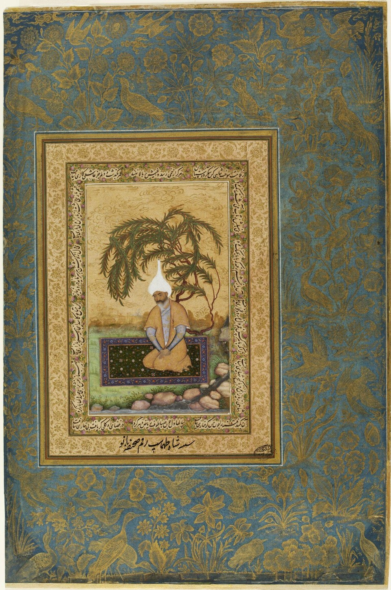
Shah Tahmasp of Iran
Sahifa Banu · Early 17th century
India & South Asia
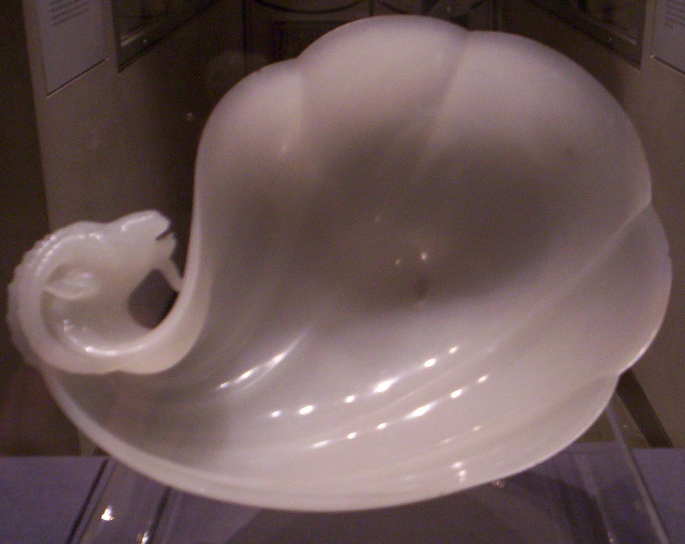
Wine cup of Shah Jahan
Unknown Mughal jade carvers · AH 1067 / 1657
India & South Asia
British Museum 4

Takiyasha the Witch and the Skeleton Spectre
Utagawa Kuniyoshi · About 1844–46
Japan

Mosque lamp made for the Dome of the Rock
Painted by Musli, Iznik · AH 956 / 1549
Islamic World
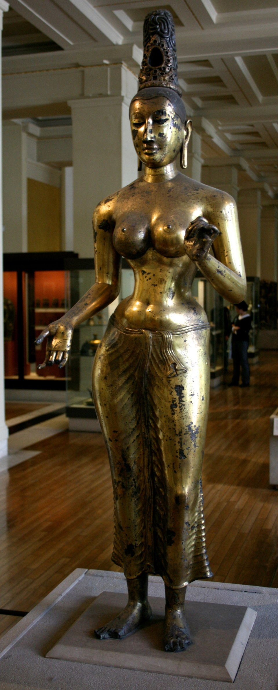
Statue of Tara
Unknown Sri Lankan bronze caster · 700s
India & South Asia

Princes of the House of Timur
Attributed to Mir Sayyid Ali, with heads repainted in the early 1600s · About 1550–55, reworked about 1605
India & South Asia
Courtauld Gallery 3


Tate Britain 3


Wallace Collection 2


New York United States · 46
Metropolitan Museum of Art 42

Soap Bubbles
Jean-Siméon Chardin · c. 1733–34
Baroque & Rococo

Self-Portrait with Two Pupils
Adélaïde Labille-Guiard · 1785
Neoclassical & Romantic

Charlotte du Val d'Ognes
Marie-Denise Villers · 1801
Neoclassical & Romantic

View from Mount Holyoke after a Thunderstorm (The Oxbow)
Thomas Cole · 1836
Neoclassical & Romantic

Fur Traders Descending the Missouri
George Caleb Bingham · 1845
Neoclassical & Romantic

The Horse Fair
Rosa Bonheur · 1852–55
Realism & Impressionism

The Third-Class Carriage
Honoré Daumier · 1864
Realism & Impressionism

The Champion Single Sculls (Max Schmitt in a Single Scull)
Thomas Eakins · 1871
Realism & Impressionism

Madame X
John Singer Sargent · 1883–84
Realism & Impressionism

The Gulf Stream
Winslow Homer · 1899, reworked by 1906
Realism & Impressionism

Poem Written in a Boat on the Wu River
Mi Fu · About 1095
China
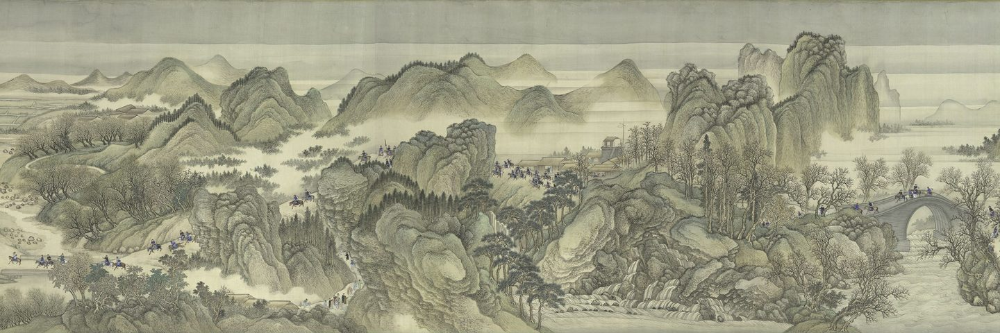
The Kangxi Emperor's Southern Inspection Tour, Scroll Three: Ji'nan to Mount Tai
Wang Hui and assistants · Datable to 1698
China

Flower Study
Yun Bing · Late 1600s or early 1700s
China
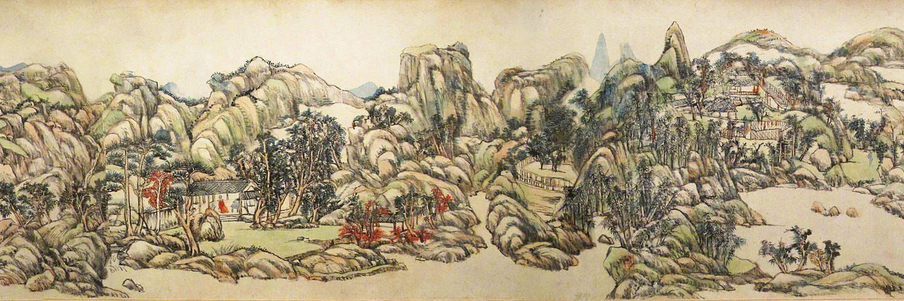
Wangchuan Villa
Wang Yuanqi · 1711
China

Lovers Walking in the Snow (Crow and Heron)
Suzuki Harunobu · 1764–1772
Japan
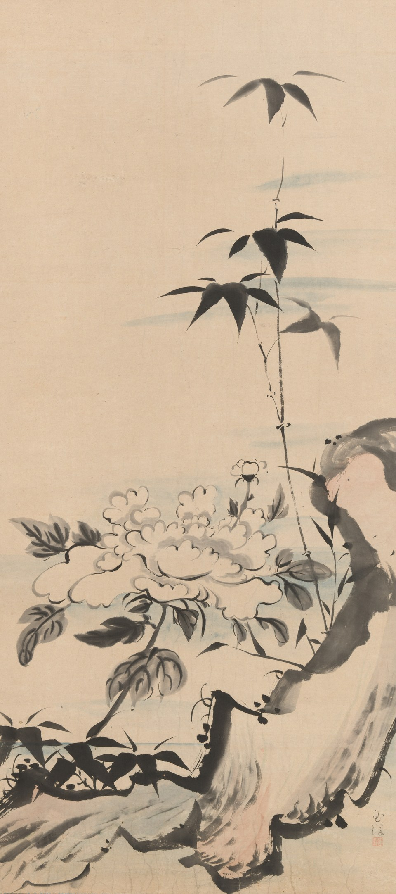
Peony and Bamboo
Ike Gyokuran · About 1768
Japan
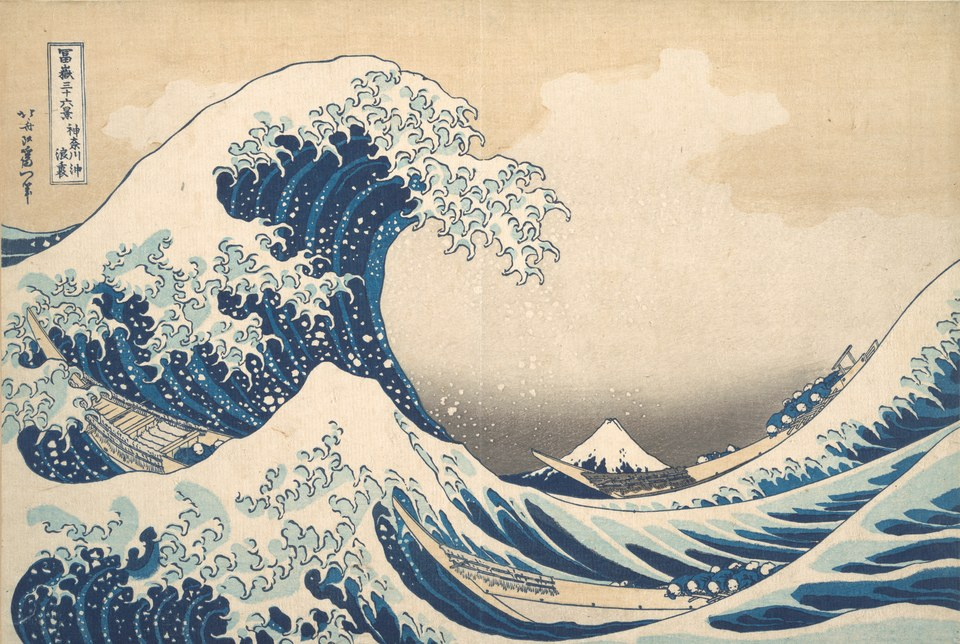
Under the Wave off Kanagawa (The Great Wave)
Katsushika Hokusai · About 1830–32
Japan

Maebyeong vase with inlaid cranes and clouds
Unknown Goryeo potter · Second half of the 12th century
Korea
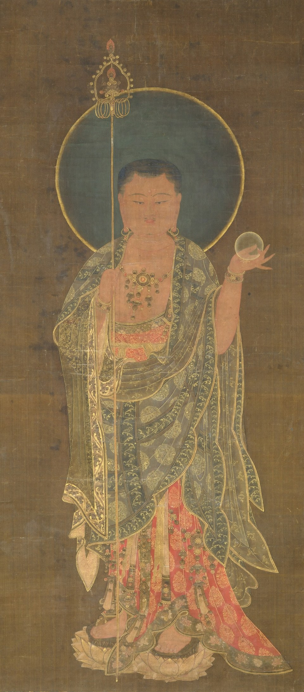
Ksitigarbha, the bodhisattva of the underworld
Unknown Goryeo Buddhist painter · Goryeo dynasty, first half of the 14th century
Korea
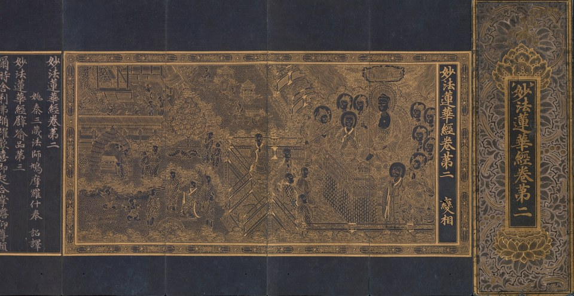
Illustrated Manuscript of the Lotus Sutra, Volume 2
Unknown Goryeo sutra painter and scribe · Goryeo dynasty, about 1340
Korea

Jar with floral scroll
Unknown Joseon potter · Late 15th to early 16th century
Korea
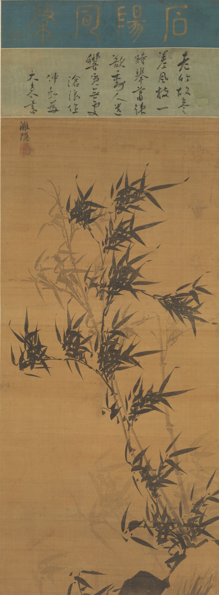
Bamboo in the Wind
Yi Jeong · Early 17th century
Korea

Moon Jar
Unknown Joseon potter · Second half of the 18th century
Korea

Still Life with Bronze Vessels and Flowering Plants
Attributed to Jang Seung-eop · 1894
Korea
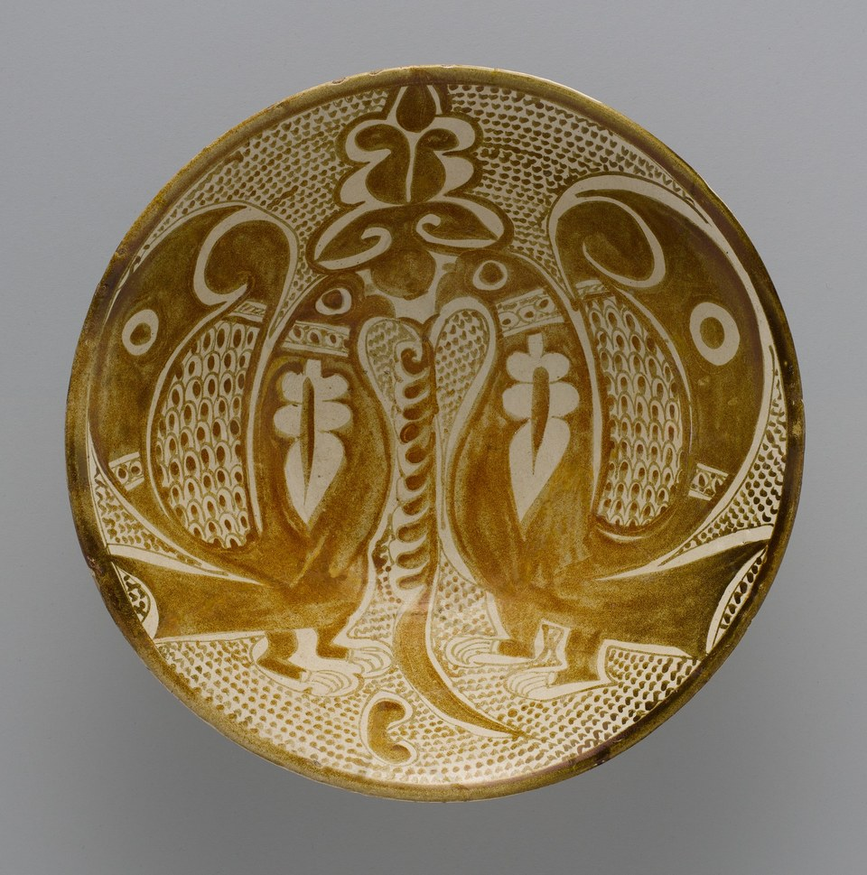
Bowl with Two Facing Peacocks
Unknown Iraqi potter, probably of Basra · Second to third quarter of the 900s
Islamic World
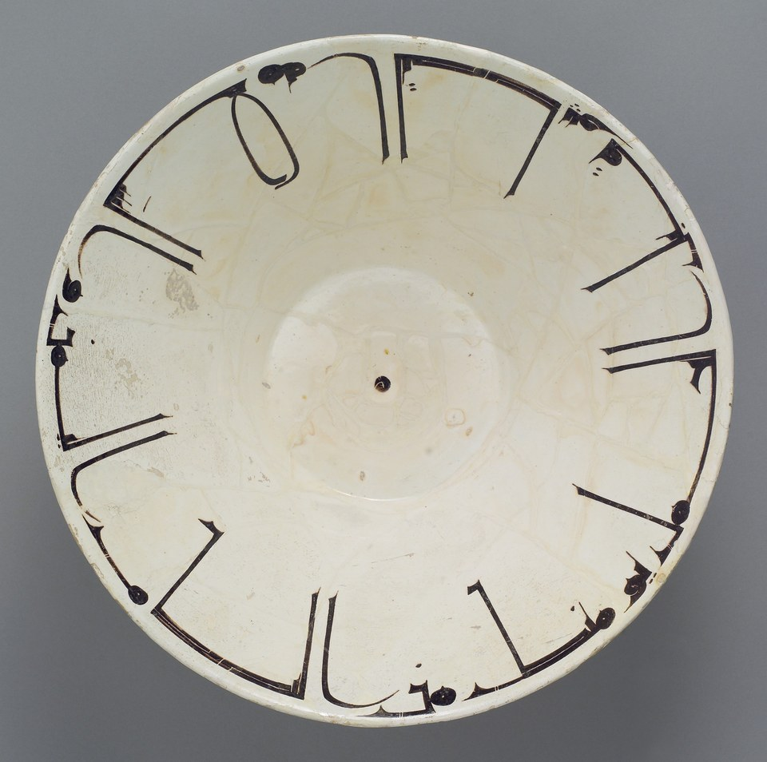
Bowl with Arabic Inscription
Unknown Samanid potter of Nishapur · 900s
Islamic World

Bowl, Mina'i ("enameled") ware
Unknown Iranian potter, probably of Kashan · Late 12th–early 13th century
Islamic World
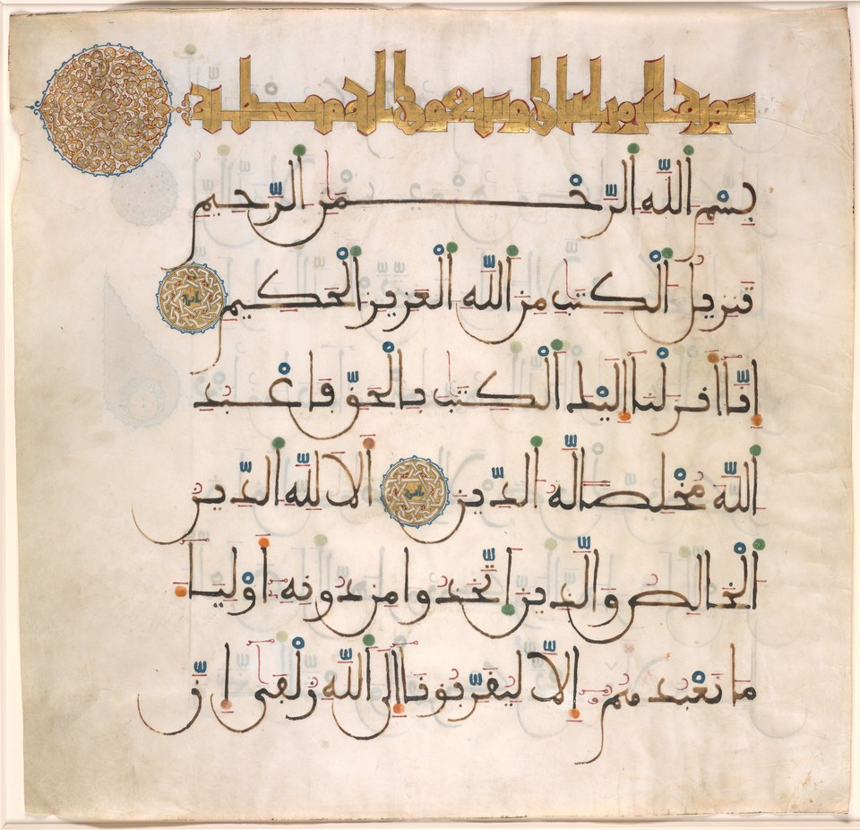
Folio from a Qur'an Manuscript
Unknown Nasrid calligrapher · Late 13th–early 14th century
Islamic World

"The Elephant Clock", Folio from a Book of the Knowledge of Ingenious Mechanical Devices by al-Jazari
Unknown painter, after the designs of al-Jazari · AH 715 / 1315
Islamic World

Mosque Lamp Bearing the Name of the Mamluk Sultan al-Malik al-Nasir
Unknown Mamluk glassmaker · About 1340
Islamic World

Mihrab (Prayer Niche)
Unknown Isfahan tile cutters · Dated AH 755 / 1354–55
Islamic World

Tughra (Insignia) of Sultan Süleiman the Magnificent
Unknown Ottoman court calligrapher and illuminators · About 1555–60
Islamic World
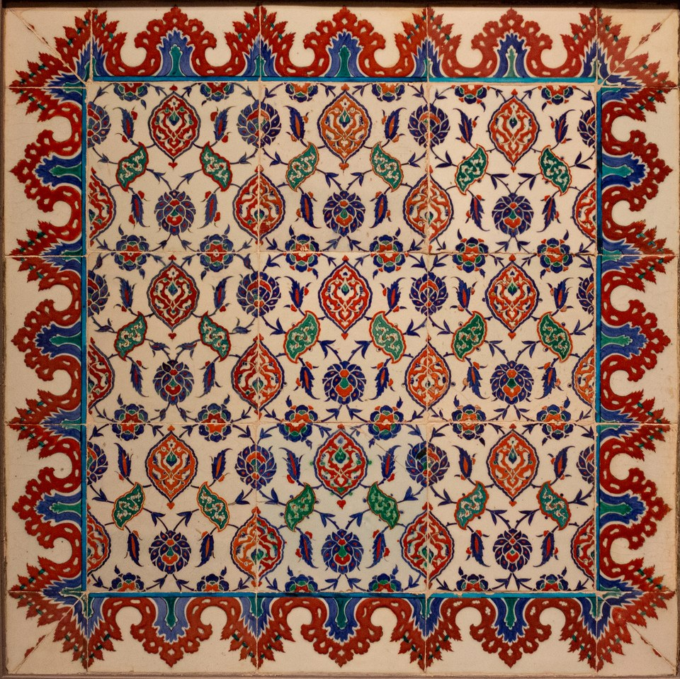
Tile Panel
Unknown Iznik potters · Second half of the 16th century
Islamic World
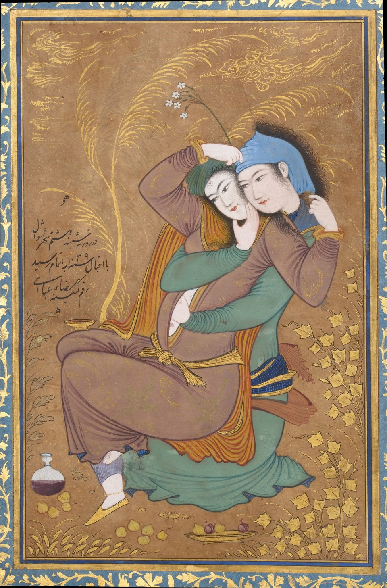
The Lovers
Reza Abbasi · AH 1039 / 1630
Islamic World

Avalokiteshvara, the Bodhisattva of Infinite Compassion
Unknown Newar metal caster of the Kathmandu Valley · 900s
India & South Asia

The Bodhisattva Avalokiteshvara Dispensing Boons: Folio from an Ashtasahasrika Prajnaparamita Manuscript
Mahavihara Master · Early 1100s
India & South Asia

Vasant Ragini, Page from a Ragamala Series (Garland of Musical Modes)
Unknown painter of Amber · Early 1600s
India & South Asia

Shah Jahan Watching an Elephant Fight, folio from a Padshahnama
Bulaqi · Probably 1639
India & South Asia
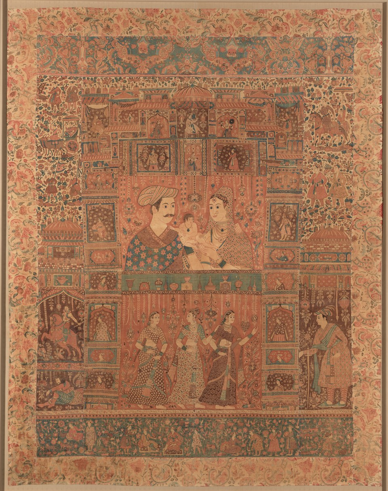
Kalamkari Hanging with Figures in an Architectural Setting
Unknown Deccani dyers and painters · About 1640–50
India & South Asia

A Courtesan and Her Lover Estranged by a Quarrel: Page from a Rasamanjari series
Devidasa of Nurpur · 1694–95
India & South Asia
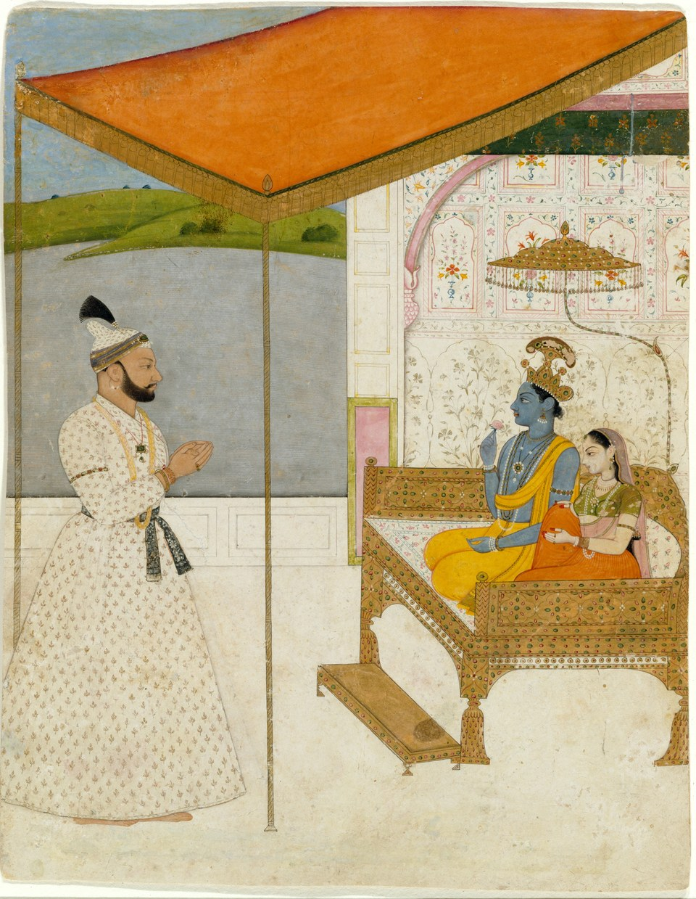
Raja Balwant Singh’s Vision of Krishna and Radha
Attributed to Nainsukh · About 1745–50
India & South Asia

Krishna Subduing Kaliya, the Snake Demon: Folio from a Bhagavata Purana Series
First generation after Manaku and Nainsukh · About 1785
India & South Asia
Museum of Modern Art 2


The Frick Collection 1

The Met Cloisters 1

Seoul South Korea · 28
National Museum of Korea 15

Melon-shaped vase
Unknown Goryeo potter · First half of the 12th century
Korea
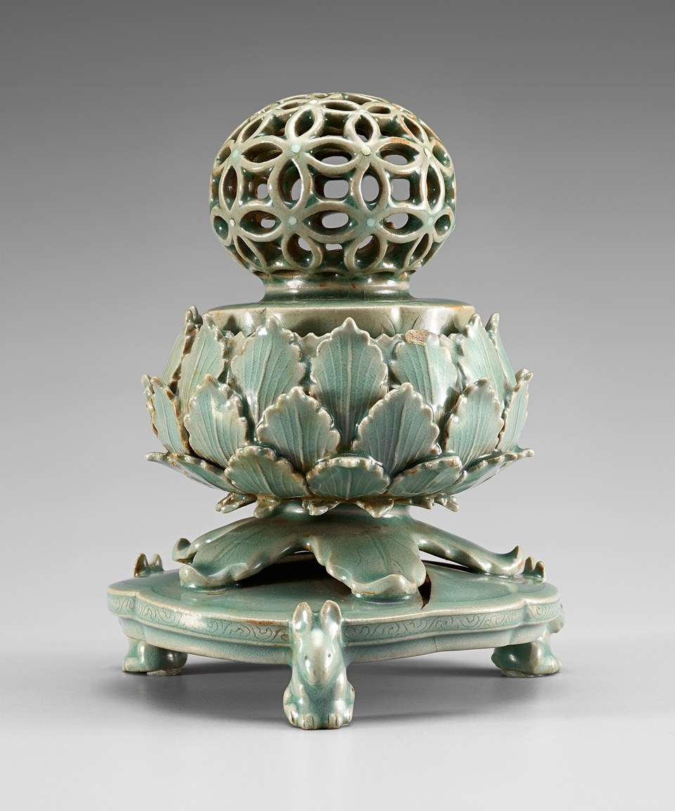
Incense burner with openwork lid
Unknown Goryeo potter · Goryeo dynasty, 12th century
Korea

Portrait of Yi Je-hyeon
Chen Jianru · 1319
Korea

Hunting on Horseback
Attributed to King Gongmin · Goryeo dynasty, 14th century
Korea

Flat bottle with incised fish
Unknown Joseon potter · Joseon dynasty, 15th to 16th century
Korea

Plants and Insects: Cucumber and Frog
Attributed to Sin Saimdang · Joseon dynasty
Korea

Searching for Plum Blossoms
Kim Myeong-guk · Mid 17th century
Korea

Clearing after Rain on Mount Inwang
Jeong Seon · 1751
Korea

Self-Portrait at Seventy
Kang Se-hwang · 1782
Korea

Wrestling, from the Album of Genre Paintings
Kim Hong-do · Late 18th century
Korea
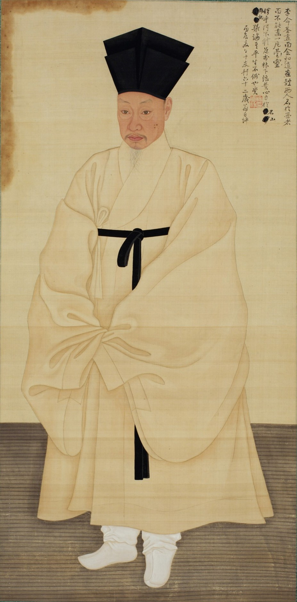
Portrait of Seo Jik-su
Yi Myeong-gi and Kim Hong-do · 1796
Korea
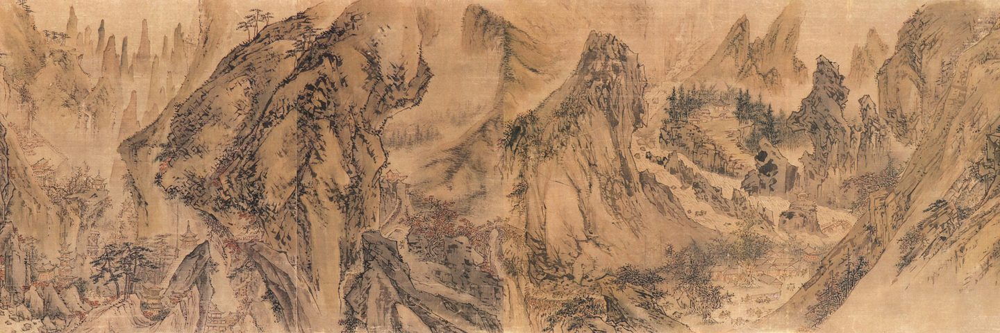
Endless Rivers and Mountains
Yi In-mun · Late 18th to early 19th century
Korea
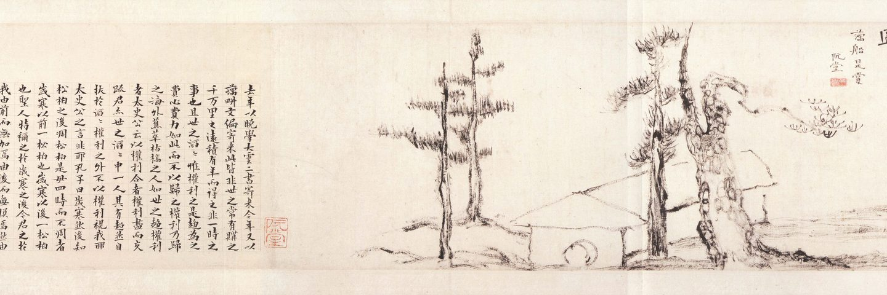
Winter Scene (Sehando)
Kim Jeong-hui · 1844
Korea
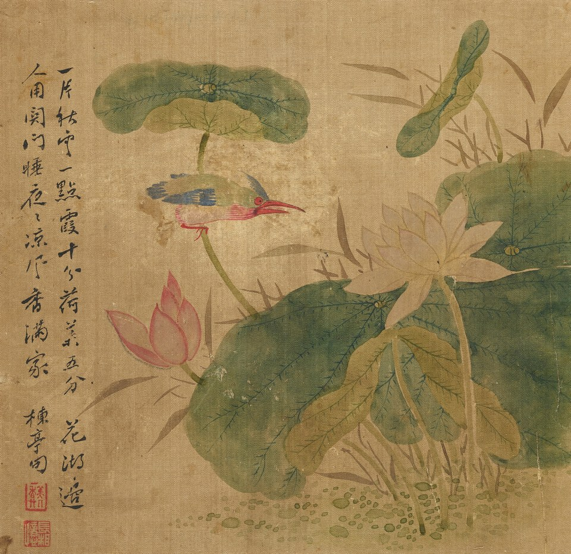
Lotus and Kingfisher, from an Album of Flowers and Birds
Attributed to Jukhyang · 1800s
Korea

Portrait of Choe Ik-hyeon
Chae Yong-sin · 1905
Korea
Kansong Art Museum 4
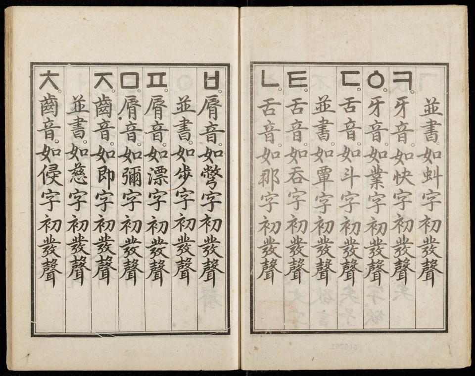
Hunminjeongeum Haerye, the book that announced the Korean alphabet
King Sejong and scholars of the Hall of Worthies · 1446
Korea

Dano Festival, from the Hyewon Album of Genre Paintings
Sin Yun-bok · Late 18th to early 19th century
Korea
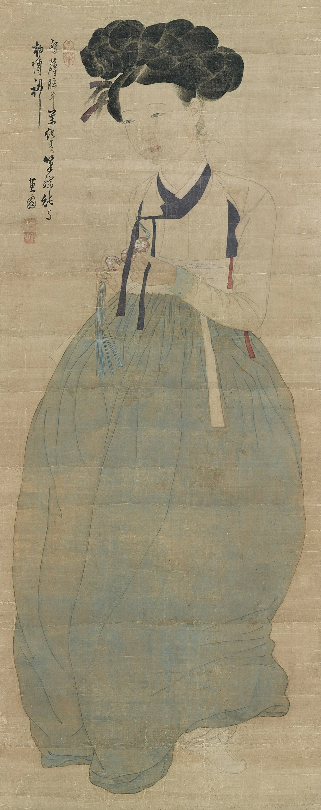
Portrait of a Beauty
Sin Yun-bok · Late 18th to early 19th century
Korea

Cat Stealing a Chick, from the Geungjae Album of Genre Paintings
Kim Deuk-sin · Late 18th to early 19th century
Korea
National Palace Museum of Korea 3


Ewha Womans University Museum 2


Leeum, Samsung Museum of Art 2


National Folk Museum of Korea 1
Seoul National University Museum 1

Tokyo Japan · 25
Tokyo National Museum 16
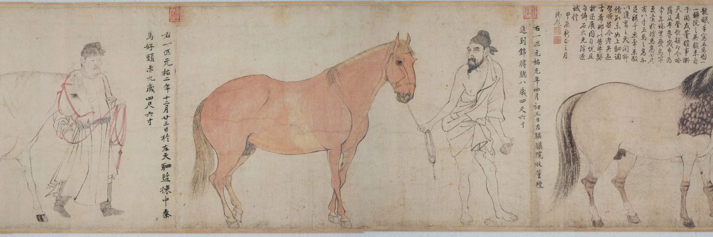
Five Horses
Li Gonglin · About 1090
China

The Poet Li Bai Strolling
Liang Kai · 13th century
China
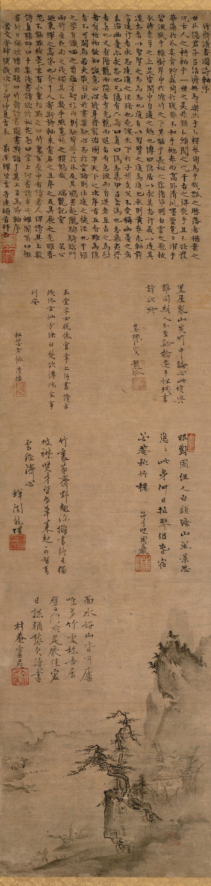
Reading in Bamboo Grove Study
Attributed to Tenshō Shūbun · 1447 (date of the preface)
Japan
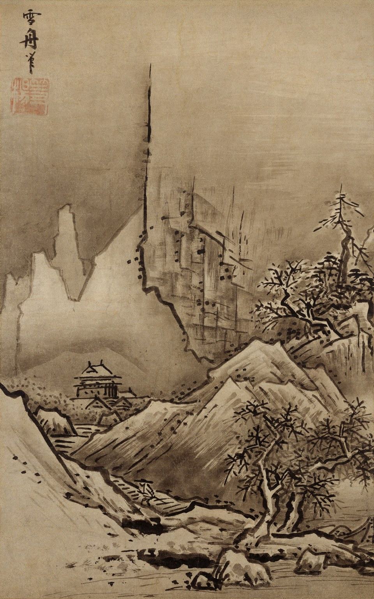
Winter Landscape
Sesshū Tōyō · Late 1400s or early 1500s
Japan

Landscape
Sesshū Tōyō · 1495
Japan

Black Raku tea bowl named Suehiro
Chōjirō · Late 1500s–early 1600s
Japan
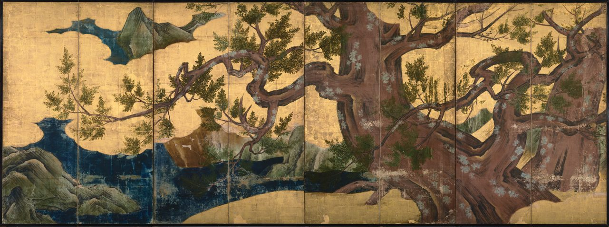
Cypress Trees
Kanō Eitoku · 1590
Japan
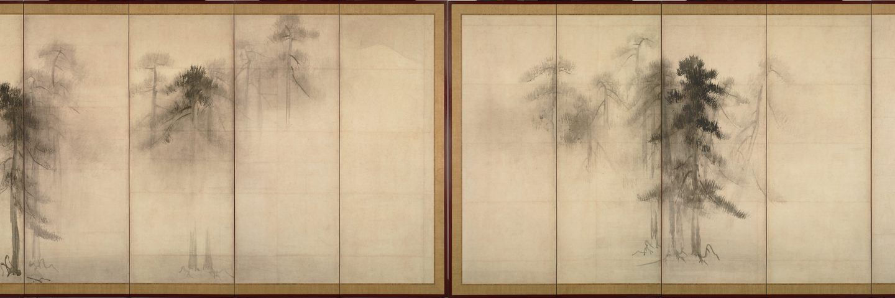
Pine Forest
Hasegawa Tōhaku · 16th century
Japan

Beauty Looking Back
Hishikawa Moronobu · Edo period, 17th century
Japan

Writing Box with Eight Bridges
Ogata Kōrin · Edo period, 18th century
Japan

Ōtani Oniji III as Edobei
Tōshūsai Sharaku · 1794
Japan
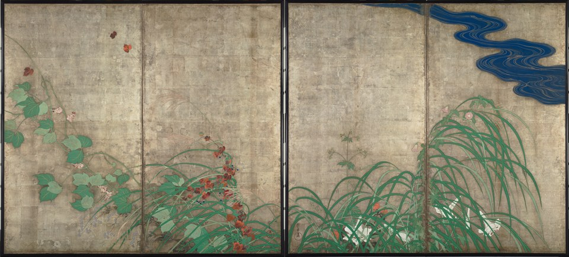
Flowering Plants of Summer and Autumn
Sakai Hōitsu · 19th century
Japan
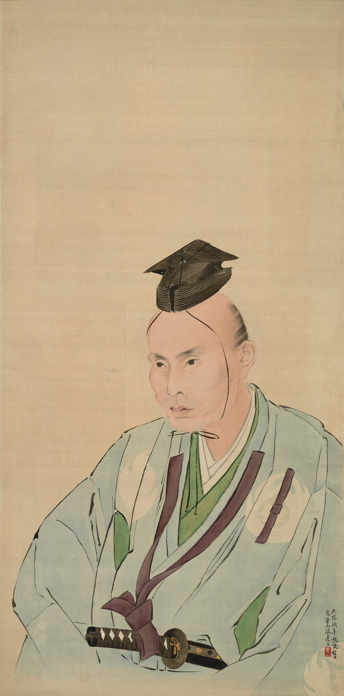
Portrait of Takami Senseki
Watanabe Kazan · 1837
Japan

Lakeside
Kuroda Seiki · 1897
Japan · Kuroda Memorial Hall

Landscape
Attributed to Kang Hui-an · Joseon dynasty, 16th to 17th century
Korea

Standing Buddha
Unknown Gandhara sculptor · Kushan dynasty, 100s to 200s
India & South Asia
Museum of the Imperial Collections, Sannomaru Shōzōkan 2
University Art Museum, Tokyo University of the Arts 2


Idemitsu Museum of Arts 1


Suntory Museum of Art 1

Ōta Memorial Museum of Art 1

Cleveland United States · 24
Cleveland Museum of Art 24

The Hermit Xu You Resting by a Stream
Dai Jin · 1400s
China

Mount Hua
Tang Yin · 1506
China

Old Trees by a Wintry Brook
Wen Zhengming · 1551
China

Mount Qingbian
Dong Qichang · 1617
China
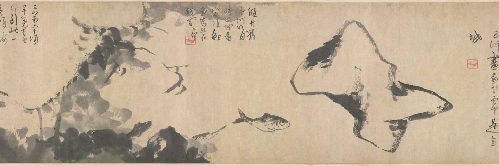
Fish and Rocks
Bada Shanren (Zhu Da) · Mid- to late 1600s
China

Reminiscences of Qinhuai River, leaf eight
Shitao · About 1695
China

Zhong Kui Supported by Ghosts
Luo Ping · 18th century
China
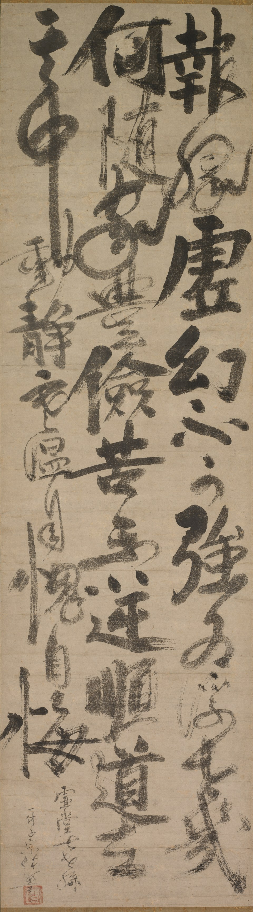
Reflections of Priest Foyen
Ikkyū Sōjun · 1400s
Japan
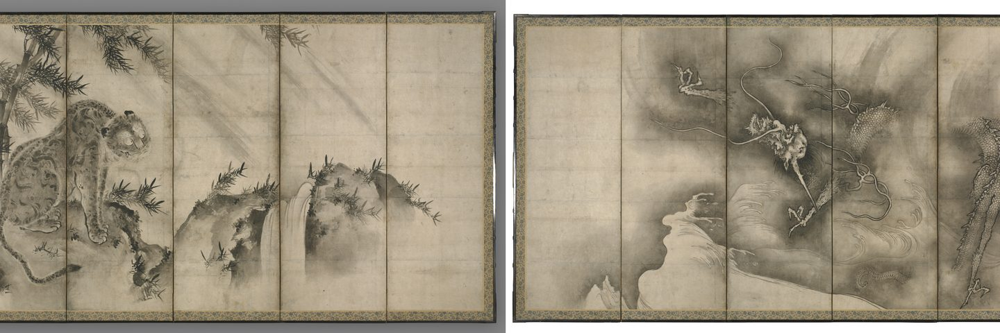
Dragon and Tiger
Sesson Shūkei · About 1546–56
Japan
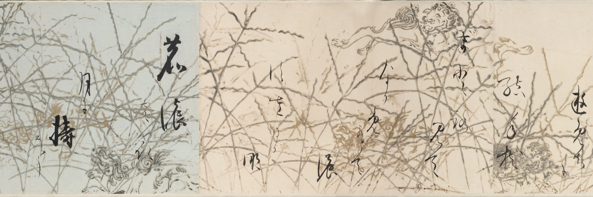
Poems from the Shinkokinshū with Printed Designs of Chinese Lions and Crab Finger Grass
Hon'ami Kōetsu (calligraphy) and Tawaraya Sōtatsu (designs) · Early 1600s
Japan
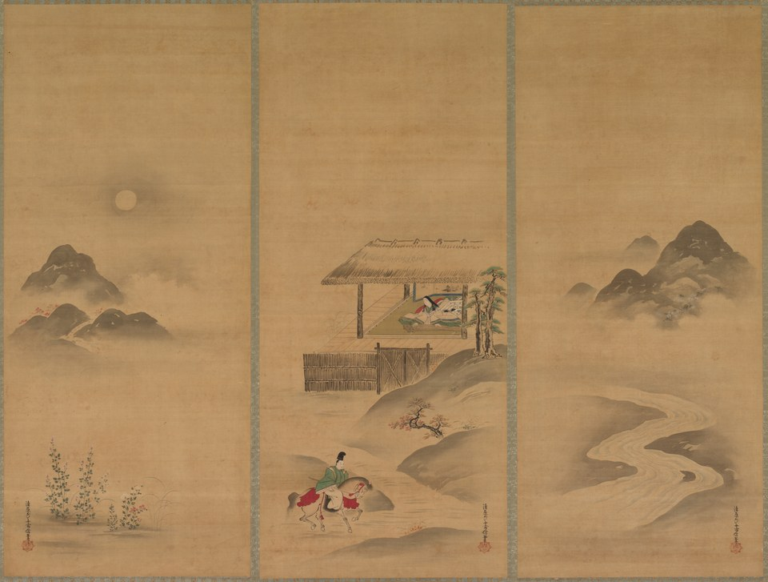
Minamoto no Nakakuni Visits Lady Kogō
Kiyohara Yukinobu · Late 1600s
Japan

Writing Box with Europeans
Unknown Japanese lacquer maker · 1800s
Japan
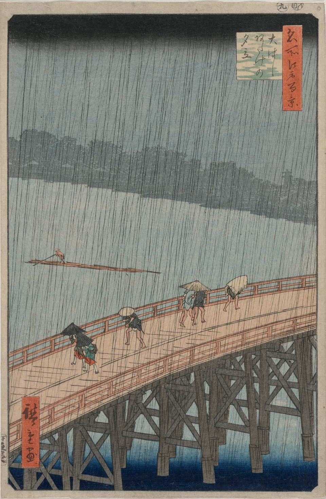
Sudden Shower over Shin-Ōhashi Bridge and Atake
Utagawa Hiroshige · 1857
Japan
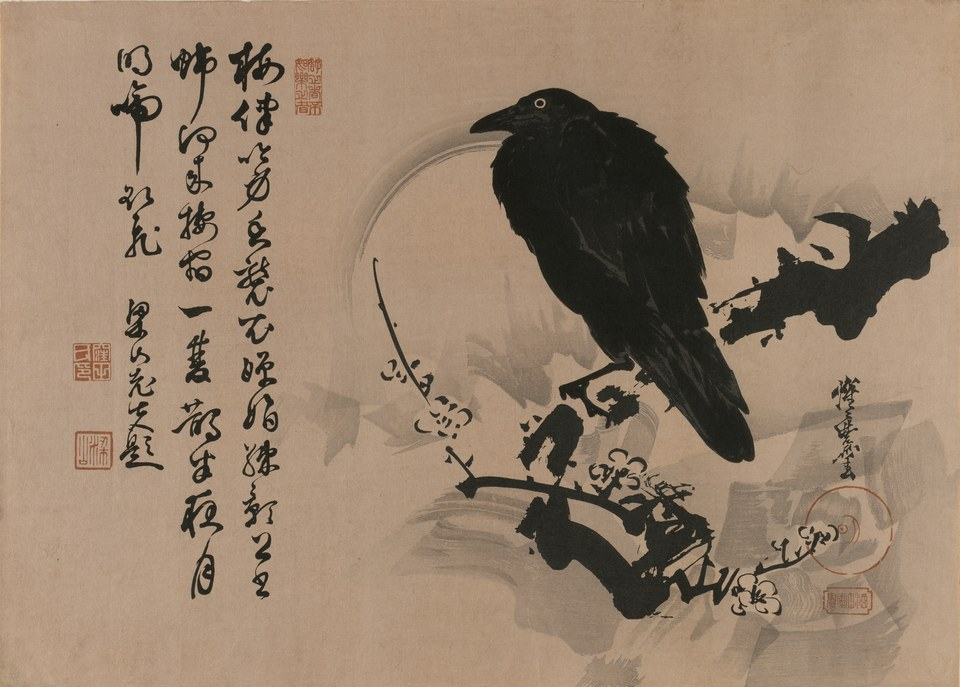
Full Moon with Crow on Plum Branch
Kawanabe Kyōsai · 1880s
Japan

Books and Scholars' Accoutrements (chaekgado)
Yi Taek-gyun · Late 1800s
Korea
Folio from a Qur'an (verso)
Unknown Abbasid scribe · 800s
Islamic World

Luxury Ewer Extending Good Fortune to the Owner
Ahmad al-Dhaki al-Mawsili · AH 620 / 1223
Islamic World

Three physicians preparing medicine, from an Arabic translation of the Materia Medica of Dioscorides
Abdallah ibn al-Fadl · AH 621 / 1224
Islamic World

Classical Turkish Carpet with the Lotto Pattern
Unknown Ushak weavers · 1600–1650
Islamic World

Suzani (divan cover)
Unknown women embroiderers of Bukhara · 1700s
Islamic World
Pen and Ink Box
Unknown Qajar lacquer painter · 1800s
Islamic World

Nataraja, Shiva as the Lord of Dance
Unknown Chola bronze caster · 1000s
India & South Asia

Green Tara
Attributed to Aniko · About 1260s
India & South Asia

Portrait of Maharaja Savant Singh with Consort, Bani Thani
Attributed to Nihal Chand · Mid-1700s
India & South Asia
Washington United States · 20
National Gallery of Art 8

The Lute Player
Orazio Gentileschi · c. 1612–20
Baroque & Rococo

Self-Portrait
Judith Leyster · c. 1630
Baroque & Rococo

Interior of the Pantheon, Rome
Giovanni Paolo Panini · c. 1734
Baroque & Rococo

Santa Maria della Salute
Francesco Guardi · c. 1770
Neoclassical & Romantic

Watson and the Shark
John Singleton Copley · 1778
Neoclassical & Romantic

Woman with a Parasol, Madame Monet and Her Son
Claude Monet · 1875
Realism & Impressionism

Rouen Cathedral, West Façade, Sunlight
Claude Monet · 1894
Realism & Impressionism

Scenic Animal Carpet
Unknown Mughal weavers of northwest India · About 1625
India & South Asia
Freer Gallery of Art 7

Luohan Laundering
Lin Tinggui · 1178
China
Page from the Anthology of the Thirty-Six Poets (Ishiyama-gire)
Attributed to Fujiwara no Sadanobu · Heian period, early 12th century
Japan
Water-Moon Avalokiteshvara
Unknown Goryeo court or monk painter · Mid-1300s
Korea

Folio from a Divan (collected poems) of Sultan Husayn Mirza
Attributed to Sultan Ali Mashhadi · About 1490
Islamic World

Queen Sembiyan Mahadevi as the Goddess Uma
Unknown Chola bronze caster · 900s
India & South Asia
Jahangir Preferring a Sufi Shaikh to Kings, from the St. Petersburg Album
Bichitr; album margins by Muhammad Sadiq · About 1615–18; margins 1747–48
India & South Asia
Emperor Jahangir embraces Shah Abbas
Abu'l Hasan; album margins by Muhammad Sadiq · About 1618; margins 1747–48
India & South Asia
National Museum of Asian Art 2


Library of Congress 1
National Portrait Gallery 1

Smithsonian American Art Museum 1

Taipei Taiwan · 18
National Palace Museum 18

Seeking the Tao in Autumn Mountains
Attributed to Juran · 10th century
China

Travelers among Mountains and Streams
Fan Kuan · About 1000
China

Magpies and Hare
Cui Bai · 1061
China

Early Spring
Guo Xi · 1072
China
The Cold Food Observance
Su Shi · After 1082
China
Poem on the Hall of Wind and Pines
Huang Tingjian · About 1102
China

Walking on a Mountain Path in Spring
Ma Yuan · about 1190–1225
China
Pure Distance of Mountains and Streams
Xia Gui · early 1200s
China

Evening Outing by Torchlight
Ma Lin · 13th century
China

Kublai Khan Hunting
Liu Guandao · 1280
China
Autumn Colors on the Qiao and Hua Mountains
Zhao Mengfu · 1295
China

Bamboo Groves in Mist and Rain
Guan Daosheng · 1308
China
Dwelling in the Fuchun Mountains (Master Wuyong scroll)
Huang Gongwang · 1347–50
China · first section in the Zhejiang Provincial Museum, Hangzhou

The Rongxi Studio
Ni Zan · 1372
China

Lofty Mount Lu
Shen Zhou · 1467
China
Miscellaneous Poems (Four Poems by Cao Zhi)
Zhu Yunming · About 1525
China
Spring Dawn in the Han Palace
Qiu Ying · About 1542–1552
China
A Hundred Steeds
Giuseppe Castiglione (Lang Shining) · 1728
China
Madrid Spain · 16
Museo del Prado 15

The Annunciation
Fra Angelico · c. 1426
Renaissance

The Descent from the Cross
Rogier van der Weyden · c. 1435
Renaissance

The Garden of Earthly Delights
Hieronymus Bosch · c. 1490–1500
Renaissance

The Haywain Triptych
Hieronymus Bosch · 1512–15
Renaissance

Landscape with Charon Crossing the Styx
Joachim Patinir · c. 1520–24
Renaissance

The Sense of Sight
Jan Brueghel the Elder and Peter Paul Rubens · 1617
Baroque & Rococo

Hippomenes and Atalanta
Guido Reni · c. 1618–19
Baroque & Rococo

The Garden of Love
Peter Paul Rubens · 1630–35
Baroque & Rococo

The Surrender of Breda
Diego Velázquez · c. 1635
Baroque & Rococo

Las Meninas
Diego Velázquez · 1656
Baroque & Rococo

The Naked Maja
Francisco Goya · 1795–1800
Neoclassical & Romantic

The Family of Carlos IV
Francisco Goya · 1800
Neoclassical & Romantic

The Third of May 1808
Francisco Goya · 1814
Neoclassical & Romantic

Saturn Devouring His Son
Francisco Goya · 1820–23
Neoclassical & Romantic

The Dog
Francisco Goya · 1820–23
Neoclassical & Romantic
Thyssen-Bornemisza Museum 1

Beijing China · 13
Palace Museum 12
The Xiao and Xiang Rivers
Attributed to Dong Yuan · 10th century
China
The Night Revels of Han Xizai
Attributed to Gu Hongzhong · Original 10th century; this version a Southern Song copy, about 1163–1224
China
A Thousand Li of Rivers and Mountains
Wang Ximeng · 1113
China
Along the River During the Qingming Festival
Zhang Zeduan · Early 12th century
China
The Skeleton Puppet Show
Li Song · About 1200
China
Eight Flowers
Qian Xuan · Before 1289
China

The Fisherman
Wu Zhen · 1336
China

Ink Grapes
Xu Wei · Ming dynasty, late 1500s
China
Orchids and Rocks
Ma Shouzhen · 1604
China

Album of Flowers, leaf five
Wen Shu · Before 1634
China

The "Yuzuo" Chapter of the Xunzi, in Seal Script
Deng Shiru · Before 1796
China

Su Wu Herding Sheep
Ren Yi (Ren Bonian) · 1880
China
National Art Museum of China 1

Florence Italy · 12
Uffizi Gallery 8

Adoration of the Magi
Gentile da Fabriano · 1423
Renaissance

Portinari Altarpiece
Hugo van der Goes · c. 1473–78
Renaissance

Primavera
Sandro Botticelli · c. 1480
Renaissance

The Birth of Venus
Sandro Botticelli · c. 1484–86
Renaissance

Doni Tondo
Michelangelo · c. 1505–07
Renaissance

Venus of Urbino
Titian · 1538
Renaissance

Madonna with the Long Neck
Parmigianino · c. 1535–40
Renaissance

Judith Slaying Holofernes
Artemisia Gentileschi · c. 1620
Baroque & Rococo
Brancacci Chapel, Santa Maria del Carmine 1

Gallery of Modern Art, Palazzo Pitti 1

Santa Felicita 1

Santa Maria Novella 1

Kyoto Japan · 11
Kyoto National Museum 4
Hungry Ghosts Scroll
Unknown painters · Late 12th century
Japan

Catching a Catfish with a Gourd
Josetsu · About 1413–15
Japan · on deposit from Taizō-in, Myōshin-ji
Pine and Myna Birds
Kaihō Yūshō · 1597
Japan · on deposit from Zenkyo-an, Kennin-ji
Wind God and Thunder God
Tawaraya Sōtatsu · Edo period, 17th century
Japan · on deposit from Kennin-ji
Tō-ji 2


Daisen-in, Daitoku-ji 1
Jingo-ji 1

Kohō-an, Daitoku-ji 1

Ryōkō-in, Daitoku-ji 1

Amsterdam Netherlands · 8
Rijksmuseum 6

Winter Landscape with Ice Skaters
Hendrick Avercamp · c. 1608
Baroque & Rococo

The Night Watch
Rembrandt · 1642
Baroque & Rococo

The Milkmaid
Johannes Vermeer · c. 1660
Baroque & Rococo

The Merry Family
Jan Steen · 1668
Baroque & Rococo

The Windmill at Wijk bij Duurstede
Jacob van Ruisdael · c. 1668–70
Baroque & Rococo

Still Life with Flowers on a Marble Tabletop
Rachel Ruysch · 1716
Baroque & Rococo


Istanbul Turkey · 8
Topkapı Palace Museum Library 3

Sultan Mehmed II smelling a rose
Attributed to Sinan Bey or his pupil Şiblizade Ahmed · About 1480–81
Islamic World

Süleyman in procession at the circumcision festival of 1530, from the Hünername
Nakkaş Osman and the Ottoman court workshop · About 1587–88
Islamic World

The sultan watches the festival on the Golden Horn, from the Surname-i Vehbi
Levni · About 1720–30
Islamic World
Turkish and Islamic Arts Museum 3


Istanbul University Library 1

Pera Museum 1

The Hague Netherlands · 7
Mauritshuis 7

Still Life with Cheeses, Almonds and Pretzels
Clara Peeters · c. 1615
Baroque & Rococo

Vanitas Still Life
Pieter Claesz · 1630
Baroque & Rococo

The Anatomy Lesson of Dr Nicolaes Tulp
Rembrandt · 1632
Baroque & Rococo

The Bull
Paulus Potter · 1647
Baroque & Rococo

The Goldfinch
Carel Fabritius · 1654
Baroque & Rococo

View of Delft
Johannes Vermeer · c. 1660–61
Baroque & Rococo

Girl with a Pearl Earring
Johannes Vermeer · c. 1665
Baroque & Rococo
Berlin Germany · 6
Alte Nationalgalerie 4


Rome Italy · 6
Galleria Colonna 1

Galleria Doria Pamphilj 1

Palazzo Farnese 1

San Luigi dei Francesi 1


Santa Maria del Popolo 1

Boston United States · 5
Museum of Fine Arts 5

The Slave Ship
J. M. W. Turner · 1840
Neoclassical & Romantic

Where Do We Come From? What Are We? Where Are We Going?
Paul Gauguin · 1897–98
Realism & Impressionism
Court Ladies Preparing Newly Woven Silk
Attributed to Emperor Huizong, after Zhang Xuan · Early 12th century, after an 8th-century original
China
Nine Dragons
Chen Rong · 1244
China
Night Attack on the Sanjō Palace, from the Illustrated Scrolls of the Events of the Heiji Era
Unknown painter · Second half of the 13th century
Japan
Dublin Ireland · 5
Chester Beatty 5

Folio from the Blue Qur'an
Unknown scribe and gilder · About 775–850
Islamic World
The Ibn al-Bawwab Qur'an, headings for Chapter 1, al-Fatiha, and Chapter 2, al-Baqara
Ibn al-Bawwab · AH 391 / 1000–1001
Islamic World

Description of the Prophet (Hilya al-nabi)
Hafız Osman · AH 1103 / 1691–92
Islamic World

Page of Sudani script (al-Fatiha)
Unknown West African scribe · 1800s
Islamic World

Yogini with a mynah bird
The Dublin Painter · About 1600
India & South Asia
Edinburgh United Kingdom · 5
Scottish National Gallery 3


Edinburgh University Library 1

Scottish National Portrait Gallery 1

Minneapolis United States · 5
Minneapolis Institute of Art 5

Bamboo and Rocks
Zheng Xie (Zheng Banqiao) · About 1760
China

Evening Landscape with Traveler
Yosa Buson · Second half of the 1700s
Japan
Roosters, Hen, and Chicks
Itō Jakuchū · 1795
Japan
Branch of Red Maple Leaves with Poem
Ōtagaki Rengetsu · Mid 1800s
Japan

Brahminy Starling on Neem Tree Branch
Shaykh Zayn al-Din · 1780
India & South Asia
Vienna Austria · 5
Kunsthistorisches Museum 2


Albertina 1

MAK, Museum of Applied Arts 1

Wien Museum 1

Chicago United States · 4
Art Institute of Chicago 4


Philadelphia United States · 4
Philadelphia Museum of Art 3


Philadelphia Museum of Art and Pennsylvania Academy of the Fine Arts 1

St Petersburg Russia · 4
State Russian Museum 2


Hermitage Museum 1

Institute of Oriental Manuscripts, Russian Academy of Sciences 1

Vatican City Vatican City · 4
Sistine Chapel 3


Apostolic Palace 1

Birmingham United Kingdom · 3


Detroit United States · 3


Dresden Germany · 3
Gemäldegalerie Alte Meister 2


Galerie Neue Meister 1

Hamburg Germany · 3


Moscow Russia · 3


Munich Germany · 3
Alte Pinakothek 2


Neue Pinakothek 1

Venice Italy · 3
Basilica dei Frari 1

Gallerie dell'Accademia 1

San Giorgio Maggiore 1

Elsewhere 130
Australia
National Gallery of Australia, Canberra 1

Belgium
Cathedral of Our Lady, Antwerp 1

Royal Museum of Fine Arts, Antwerp 1

Royal Museums of Fine Arts of Belgium, Brussels 2


St Bavo's Cathedral, Ghent 1

Canada
National Gallery of Canada, Ottawa 1

Aga Khan Museum, Toronto 1
China
Mogao Caves, Dunhuang 1
Art Museum, The Chinese University of Hong Kong, Hong Kong 1

Hong Kong Museum of Art, Hong Kong 1

Tomb of the Dancers, Ji'an 1

Hall of the Three Purities, Yongle Palace, Ruicheng 1
Shanghai Museum, Shanghai 2


Liaoning Provincial Museum, Shenyang 1
Denmark
Hirschsprung Collection, Copenhagen 1

Statens Museum for Kunst, Copenhagen 1

Skagens Museum, Skagen 1

Egypt
National Library of Egypt, Cairo 1

France
Musée Unterlinden, Colmar 1

Château de Malmaison, Rueil-Malmaison 1

Germany
Würzburg Residence, Würzburg 1

India
Taj Mahal, Agra 1

Lalbhai Dalpatbhai Museum, Ahmedabad 1

Ajanta Caves, Ajanta 2


Chennakeshava Temple, Belur 1

Ellora Caves, Ellora 1

Mehrangarh Museum Trust, Jodhpur 1

Khajuraho temples, Khajuraho 1

Indian Museum, Kolkata 2
Sun Temple, Konark 1

Mamallapuram 1

Government Museum, Mathura 1

Elephanta Caves, Elephanta Island, Mumbai 1

National Museum, New Delhi 1

Rani ki Vav, Patan 1

Bihar Museum, Patna 1

Great Stupa, Sanchi 1

Archaeological Museum, Sarnath 2

Brihadishvara Temple, Thanjavur 1

Kowdiar Palace, Thiruvananthapuram 1

Udayagiri Caves, Vidisha 1
Iran
Naqsh-e Jahan Square, Isfahan 1

Golestan Palace Library, Tehran 1

Italy
Ducal Palace, Mantua 1

Pinacoteca di Brera, Milan 1

Santa Maria delle Grazie, Milan 1

Palazzo Abatellis, Palermo 1

Galleria Nazionale delle Marche, Urbino 1

Japan
MOA Museum of Art, Atami 2

Hōryū-ji, Ikaruga 2


Kawabata Yasunari Foundation, Kamakura 1

Reihōkan Museum, Kōyasan 1

Itsukushima Shrine, Miyajima 1

Tokugawa Art Museum, Nagoya 2


Nara National Museum, Nara 1

Sunritz Hattori Museum of Arts, Suwa 1

Tenri Central Library, Tenri University, Tenri 1
Manju-ji, Ōita 1

Jerusalem
Dome of the Rock, Jerusalem 1

Mexico
Museo Nacional de Arte, Mexico City 1

Netherlands
Leiden University Libraries, Leiden 1
Centraal Museum, Utrecht 1

North Korea
Anak Tomb No. 3, Anak 1

Gangseo Great Tomb, Nampo 1

Norway
National Museum, Oslo 1

Poland
National Museum, Gdańsk 1

Czartoryski Museum, Kraków 1

National Museum, Poznań 1

Royal Castle, Warsaw 1

Portugal
Calouste Gulbenkian Museum, Lisbon 1
Puerto Rico
Museo de Arte de Ponce, Ponce 1

Qatar
Museum of Islamic Art, Doha 2


South Korea
Busan Museum, Busan 1

Dong-A University Museum, Busan 1

Gubong Yeongdang shrine of the Goryeong Sin clan, Cheongju 1

National Cheongju Museum, Cheongju 1
Ojukheon and Municipal Museum, Gangneung 1
Gapsa Temple, Gongju 1

Gyeongju National Museum, Gyeongju 1

Gosan Yun Seon-do Exhibition Hall, Haenam 1

Haeinsa Temple, Hapcheon 1

Tongdosa Temple, Yangsan 1

Sosu Museum, Sosu Seowon, Yeongju 1

Spain
Mosque–Cathedral of Córdoba, Córdoba 1

Palace of the Lions, Alhambra, Granada 1

Bancaja Foundation, Valencia 1

Sri Lanka
Sigiriya rock, Sigiriya 1

Switzerland
Kunstmuseum Basel, Basel 2


Museum Rietberg, Zurich 2


Syria
Umayyad Mosque, Damascus 1

United Arab Emirates
Louvre Abu Dhabi, Abu Dhabi 1

United Kingdom
Royal Collection 1

Bodleian Library, Oxford 1
United States
Harvard Art Museums, Cambridge, Massachusetts 2


Dallas Museum of Art, Dallas 2

Rock Crystal Ewer with Gold and Enamel Mounts
Unknown Fatimid crystal carver; gold mounts by Jean-Valentin Morel · Late 10th–early 11th century; mounts 1854
Islamic World · Keir Collection, on loan

Iskandar and His Men Killing a Dragon in the Mountains, from the Great Mongol Shahnama
Unknown Ilkhanid court painters · About 1330
Islamic World · Keir Collection, on loan
Hampton University Museum, Hampton 1

Wadsworth Atheneum, Hartford 1

Nelson-Atkins Museum of Art, Kansas City 2

J. Paul Getty Museum, Los Angeles 1

Los Angeles County Museum of Art, Los Angeles 1

Yale Center for British Art, New Haven 1

Norton Simon Museum, Pasadena 1

Princeton University Library, Princeton 1
Peabody Essex Museum, Salem, Massachusetts 1
San Diego Museum of Art, San Diego 1

Asian Art Museum, San Francisco 2
The Huntington, San Marino, California 2


Toledo Museum of Art, Toledo, Ohio 1

Butler Institute of American Art, Youngstown 1

Uzbekistan
Shah-i Zinda, Samarqand 1

Private collections
Private collection 4

Pyohunsa Temple in the Diamond Mountains
Choe Buk · Mid-18th century
Korea

Admonition on Seeking Truth from Facts
Kim Jeong-hui · First half of the 19th century
Korea

Nasta'liq calligraphy exercise (siyah mashq)
Mirza Gholam Reza Esfahani · AH 1289 / 1872–1873
Islamic World · Alireza Kiakazemi

Bhima kills Kichaka and his brothers, from the Razmnama
Dhannu · About 1598–99
India & South Asia